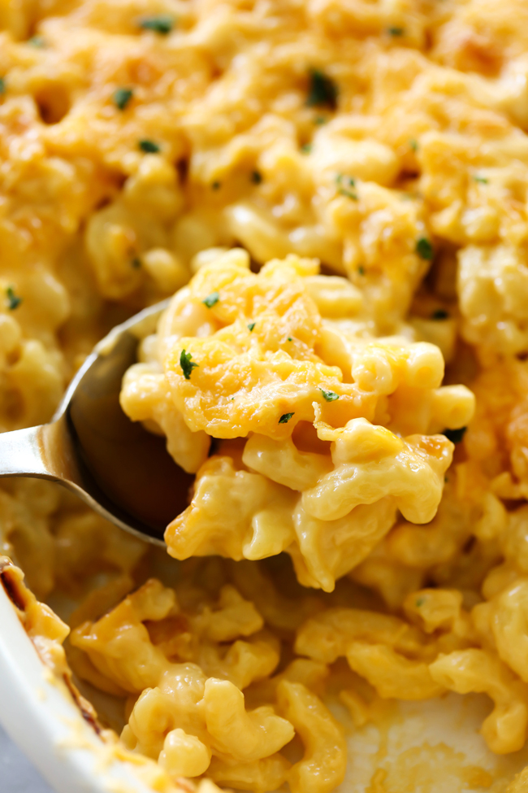

Mac and Cheese Recipe
This is a recipe for Mac and Cheese.
Ingredients:
- 1 pound elbow macaroni
- 1/2 cup butter
- 1/2 cup all-purpose flour
- 4 cups milk
- 1 cup shredded cheddar cheese
- 1/2 cup shredded Parmesan cheese
- 1/2 teaspoon salt
- 1/4 teaspoon black pepper
Instructions:
- Cook macaroni according to package directions.
- In a large saucepan, melt butter over medium heat.
- Add flour and whisk until smooth.
- Gradually whisk in milk until smooth.
- Bring to a boil, then reduce heat and simmer for 5 minutes, stirring constantly.
- Remove from heat and stir in cheddar cheese, Parmesan cheese, salt, and pepper until melted.
- Drain macaroni and add to cheese sauce.
- Mix well and pour into a greased 9x13 inch baking dish.
- Bake at 350 degrees Fahrenheit for 20 minutes, or until golden brown.
- Serve hot and enjoy!